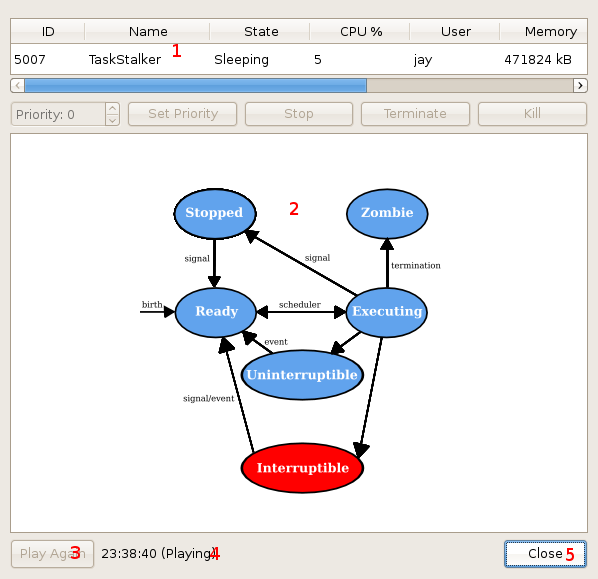

Task Stalker features the ability to record the activity of processes over a period of time, and later play back the recordings. To make a new recording, open the process viewer and click the "Record" button. To view existing recordings, go to "Manage Recordings" under the "View" menu, or press Ctrl+M.
The following window will then be displayed, allowing you to view existing recordings:
Its contents, as numbered in the diagram, are as follows:
Allows selection of a recording file, if any are available.
Closes this dialog, cancelling any action.
If a recording file is currently selected, clicking this button will delete it.
If a valid recording file is currently selected, clicking this button will play it.
Selecting to play a recording will open the recording viewer, as shown below:
Displays information about the recorded process, updating at the interval set by the recording.
Graphical representation of the task's state at the current point of the recording.
Once the recording has finished playing, clicking this button allows you to play it again.
Shows the current time (as it were when recording), and whether the recording is still playing or finished playing.
Closes the recording viewer.